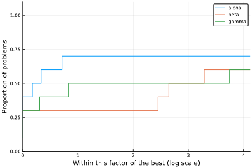
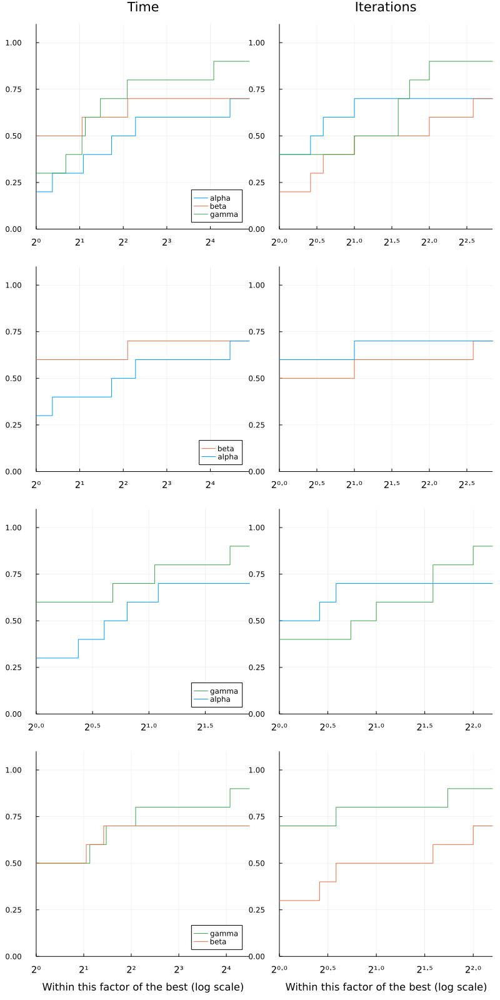

Tutorial
In this tutorial we illustrate the main uses of SolverBenchmark.
First, let's create fake data. It is imperative that the data for each solver be stored in DataFrames, and the collection of different solver must be stored in a dictionary of Symbol to DataFrame.
In our examples we'll use the following data.
using DataFrames, Printf, Random
Random.seed!(0)
n = 10
names = [:alpha, :beta, :gamma]
stats = Dict(name => DataFrame(:id => 1:n,
:name => [@sprintf("prob%03d", i) for i = 1:n],
:status => map(x -> x < 0.75 ? :first_order : :failure, rand(n)),
:f => randn(n),
:t => 1e-3 .+ rand(n) * 1000,
:iter => rand(10:10:100, n),
:irrelevant => randn(n)) for name in names)Dict{Symbol, DataFrames.DataFrame} with 3 entries:
:alpha => 10×7 DataFrame. Omitted printing of 1 columns…
:beta => 10×7 DataFrame. Omitted printing of 1 columns…
:gamma => 10×7 DataFrame. Omitted printing of 1 columns…The data consists of a (fake) run of three solvers alpha, beta and gamma. Each solver has a column id, which is necessary for joining the solvers (names can be repeated), and columns name, status, f, t and iter corresponding to problem results. There is also a column irrelevant with extra information that will not be used to produce our benchmarks.
Here are the statistics of solver alpha:
stats[:alpha]| id | name | status | f | t | iter | irrelevant | |
|---|---|---|---|---|---|---|---|
| Int64 | String | Symbol | Float64 | Float64 | Int64 | Float64 | |
| 1 | 1 | prob001 | first_order | -0.0242466 | 677.623 | 60 | -1.15534 |
| 2 | 2 | prob002 | first_order | -0.384201 | 645.643 | 90 | -1.35454 |
| 3 | 3 | prob003 | failure | 0.578679 | 634.037 | 50 | -0.117157 |
| 4 | 4 | prob004 | failure | 1.46765 | 559.585 | 70 | 1.15241 |
| 5 | 5 | prob005 | first_order | -1.76643 | 567.557 | 10 | -0.0381476 |
| 6 | 6 | prob006 | first_order | 0.608755 | 343.518 | 20 | -1.00298 |
| 7 | 7 | prob007 | first_order | -0.140199 | 426.141 | 10 | -0.79729 |
| 8 | 8 | prob008 | failure | 0.835692 | 621.998 | 20 | 0.744854 |
| 9 | 9 | prob009 | first_order | -0.929152 | 148.249 | 40 | 0.795775 |
| 10 | 10 | prob010 | first_order | 0.0788921 | 230.955 | 30 | -0.839227 |
Tables
The first thing we may want to do is produce a table for each solver. Notice that the solver result is already a DataFrame, so there are a few options available in other packages, as well as simply printing the DataFrame. Our concern here is two-fold: producing publication-ready LaTeX tables, and web-ready markdown tables.
The simplest use is pretty_stats(io, dataframe). By default, io is stdout:
using SolverBenchmark
pretty_stats(stats[:alpha])┌────────┬─────────┬─────────────┬───────────┬───────────┬────────┬────────────┐
│ id │ name │ status │ f │ t │ iter │ irrelevant │
├────────┼─────────┼─────────────┼───────────┼───────────┼────────┼────────────┤
│ 1 │ prob001 │ first_order │ -2.42e-02 │ 6.78e+02 │ 60 │ -1.16e+00 │
│ 2 │ prob002 │ first_order │ -3.84e-01 │ 6.46e+02 │ 90 │ -1.35e+00 │
│ 3 │ prob003 │ failure │ 5.79e-01 │ 6.34e+02 │ 50 │ -1.17e-01 │
│ 4 │ prob004 │ failure │ 1.47e+00 │ 5.60e+02 │ 70 │ 1.15e+00 │
│ 5 │ prob005 │ first_order │ -1.77e+00 │ 5.68e+02 │ 10 │ -3.81e-02 │
│ 6 │ prob006 │ first_order │ 6.09e-01 │ 3.44e+02 │ 20 │ -1.00e+00 │
│ 7 │ prob007 │ first_order │ -1.40e-01 │ 4.26e+02 │ 10 │ -7.97e-01 │
│ 8 │ prob008 │ failure │ 8.36e-01 │ 6.22e+02 │ 20 │ 7.45e-01 │
│ 9 │ prob009 │ first_order │ -9.29e-01 │ 1.48e+02 │ 40 │ 7.96e-01 │
│ 10 │ prob010 │ first_order │ 7.89e-02 │ 2.31e+02 │ 30 │ -8.39e-01 │
└────────┴─────────┴─────────────┴───────────┴───────────┴────────┴────────────┘Printing is LaTeX format is achieved with pretty_latex_stats:
pretty_latex_stats(stats[:alpha])\begin{longtable}{rrrrrrr}
\hline
id & name & status & f & t & iter & irrelevant \\\hline
\endfirsthead
\hline
id & name & status & f & t & iter & irrelevant \\\hline
\endhead
\hline
\multicolumn{7}{r}{{\bfseries Continued on next page}}\\
\hline
\endfoot
\endlastfoot
\( 1\) & prob001 & first\_order & \(-2.42\)e\(-02\) & \( 6.78\)e\(+02\) & \( 60\) & \(-1.16\)e\(+00\) \\
\( 2\) & prob002 & first\_order & \(-3.84\)e\(-01\) & \( 6.46\)e\(+02\) & \( 90\) & \(-1.35\)e\(+00\) \\
\( 3\) & prob003 & failure & \( 5.79\)e\(-01\) & \( 6.34\)e\(+02\) & \( 50\) & \(-1.17\)e\(-01\) \\
\( 4\) & prob004 & failure & \( 1.47\)e\(+00\) & \( 5.60\)e\(+02\) & \( 70\) & \( 1.15\)e\(+00\) \\
\( 5\) & prob005 & first\_order & \(-1.77\)e\(+00\) & \( 5.68\)e\(+02\) & \( 10\) & \(-3.81\)e\(-02\) \\
\( 6\) & prob006 & first\_order & \( 6.09\)e\(-01\) & \( 3.44\)e\(+02\) & \( 20\) & \(-1.00\)e\(+00\) \\
\( 7\) & prob007 & first\_order & \(-1.40\)e\(-01\) & \( 4.26\)e\(+02\) & \( 10\) & \(-7.97\)e\(-01\) \\
\( 8\) & prob008 & failure & \( 8.36\)e\(-01\) & \( 6.22\)e\(+02\) & \( 20\) & \( 7.45\)e\(-01\) \\
\( 9\) & prob009 & first\_order & \(-9.29\)e\(-01\) & \( 1.48\)e\(+02\) & \( 40\) & \( 7.96\)e\(-01\) \\
\( 10\) & prob010 & first\_order & \( 7.89\)e\(-02\) & \( 2.31\)e\(+02\) & \( 30\) & \(-8.39\)e\(-01\) \\\hline
\end{longtable}Alternatively, you can print to a file.
open("alpha.tex", "w") do io
println(io, "\\documentclass[varwidth=20cm,crop=true]{standalone}")
println(io, "\\usepackage{longtable}")
println(io, "\\begin{document}")
pretty_latex_stats(io, stats[:alpha])
println(io, "\\end{document}")
endrun(`latexmk -quiet -pdf alpha.tex`)
run(`pdf2svg alpha.pdf alpha.svg`)
If only a subset of columns should be printed, the DataFrame should be indexed accordingly:
df = stats[:alpha]
pretty_stats(df[!, [:name, :f, :t]])┌─────────┬───────────┬───────────┐
│ name │ f │ t │
├─────────┼───────────┼───────────┤
│ prob001 │ -2.42e-02 │ 6.78e+02 │
│ prob002 │ -3.84e-01 │ 6.46e+02 │
│ prob003 │ 5.79e-01 │ 6.34e+02 │
│ prob004 │ 1.47e+00 │ 5.60e+02 │
│ prob005 │ -1.77e+00 │ 5.68e+02 │
│ prob006 │ 6.09e-01 │ 3.44e+02 │
│ prob007 │ -1.40e-01 │ 4.26e+02 │
│ prob008 │ 8.36e-01 │ 6.22e+02 │
│ prob009 │ -9.29e-01 │ 1.48e+02 │
│ prob010 │ 7.89e-02 │ 2.31e+02 │
└─────────┴───────────┴───────────┘Markdown tables may be generated by supplying the PrettyTables tf keyword argument to specify the table format:
pretty_stats(df[!, [:name, :f, :t]], tf=tf_markdown)| name | f | t |
|---------|-----------|-----------|
| prob001 | -2.42e-02 | 6.78e+02 |
| prob002 | -3.84e-01 | 6.46e+02 |
| prob003 | 5.79e-01 | 6.34e+02 |
| prob004 | 1.47e+00 | 5.60e+02 |
| prob005 | -1.77e+00 | 5.68e+02 |
| prob006 | 6.09e-01 | 3.44e+02 |
| prob007 | -1.40e-01 | 4.26e+02 |
| prob008 | 8.36e-01 | 6.22e+02 |
| prob009 | -9.29e-01 | 1.48e+02 |
| prob010 | 7.89e-02 | 2.31e+02 |All values of tf accepted by PrettyTables may be used in SolverBenchmark.
The fmt_override option overrides the formatting of a specific column. The argument should be a dictionary of Symbol to format strings, where the format string will be applied to each element of the column.
The hdr_override changes the column headers.
fmt_override = Dict(:f => "%+10.3e",
:t => "%08.2f")
hdr_override = Dict(:name => "Name", :f => "f(x)", :t => "Time")
pretty_stats(stdout,
df[!, [:name, :f, :t]],
col_formatters = fmt_override,
hdr_override = hdr_override)┌─────────┬────────────┬──────────┐
│ Name │ f(x) │ Time │
├─────────┼────────────┼──────────┤
│ prob001 │ -2.425e-02 │ 00677.62 │
│ prob002 │ -3.842e-01 │ 00645.64 │
│ prob003 │ +5.787e-01 │ 00634.04 │
│ prob004 │ +1.468e+00 │ 00559.59 │
│ prob005 │ -1.766e+00 │ 00567.56 │
│ prob006 │ +6.088e-01 │ 00343.52 │
│ prob007 │ -1.402e-01 │ 00426.14 │
│ prob008 │ +8.357e-01 │ 00622.00 │
│ prob009 │ -9.292e-01 │ 00148.25 │
│ prob010 │ +7.889e-02 │ 00230.96 │
└─────────┴────────────┴──────────┘While col_formatters is for simple format strings, the PrettyTables API lets us define more elaborate formatters in the form of functions:
fmt_override = Dict(:f => "%+10.3e",
:t => "%08.2f")
hdr_override = Dict(:name => "Name", :f => "f(x)", :t => "Time")
pretty_stats(df[!, [:name, :f, :t]],
col_formatters = fmt_override,
hdr_override = hdr_override,
formatters = (v, i, j) -> begin
if j == 3 # t is the 3rd column
vi = floor(Int, v)
minutes = div(vi, 60)
seconds = vi % 60
micros = round(Int, 1e6 * (v - vi))
@sprintf("%2dm %02ds %06dμs", minutes, seconds, micros)
else
v
end
end)┌─────────┬────────────┬──────────────────┐
│ Name │ f(x) │ Time │
├─────────┼────────────┼──────────────────┤
│ prob001 │ -2.425e-02 │ 11m 17s 623091μs │
│ prob002 │ -3.842e-01 │ 10m 45s 642602μs │
│ prob003 │ +5.787e-01 │ 10m 34s 037248μs │
│ prob004 │ +1.468e+00 │ 9m 19s 585367μs │
│ prob005 │ -1.766e+00 │ 9m 27s 556767μs │
│ prob006 │ +6.088e-01 │ 5m 43s 518002μs │
│ prob007 │ -1.402e-01 │ 7m 06s 141220μs │
│ prob008 │ +8.357e-01 │ 10m 21s 997591μs │
│ prob009 │ -9.292e-01 │ 2m 28s 248989μs │
│ prob010 │ +7.889e-02 │ 3m 50s 955096μs │
└─────────┴────────────┴──────────────────┘See the PrettyTables.jl documentation for more information.
When using LaTeX format, the output must be understood by LaTeX. By default, numerical data in the table is wrapped in inline math environments. But those math environments would interfere with our formatting of the time. Thus we must first disable them for the time column using col_formatters, and then apply the PrettyTables formatter as above:
fmt_override = Dict(:f => "%+10.3e",
:t => "%08.2f")
hdr_override = Dict(:name => "Name", :f => "f(x)", :t => "Time")
open("alpha2.tex", "w") do io
println(io, "\\documentclass[varwidth=20cm,crop=true]{standalone}")
println(io, "\\usepackage{longtable}")
println(io, "\\begin{document}")
pretty_latex_stats(io,
df[!, [:name, :status, :f, :t, :iter]],
col_formatters = Dict(:t => "%f"), # disable default formatting of t
formatters = (v,i,j) -> begin
if j == 4
xi = floor(Int, v)
minutes = div(xi, 60)
seconds = xi % 60
micros = round(Int, 1e6 * (v - xi))
@sprintf("\\(%2d\\)m \\(%02d\\)s \\(%06d \\mu\\)s", minutes, seconds, micros)
else
v
end
end)
println(io, "\\end{document}")
end
Joining tables
In some occasions, instead of/in addition to showing individual results, we show a table with the result of multiple solvers.
df = join(stats, [:f, :t])
pretty_stats(stdout, df)┌────────┬───────────┬───────────┬───────────┬───────────┬───────────┬───────────┐
│ id │ f_alpha │ t_alpha │ f_beta │ t_beta │ f_gamma │ t_gamma │
├────────┼───────────┼───────────┼───────────┼───────────┼───────────┼───────────┤
│ 1 │ -2.42e-02 │ 6.78e+02 │ 5.90e-01 │ 3.10e+01 │ -7.31e-01 │ 5.23e+02 │
│ 2 │ -3.84e-01 │ 6.46e+02 │ -9.15e-01 │ 1.94e+02 │ -1.38e+00 │ 4.25e+02 │
│ 3 │ 5.79e-01 │ 6.34e+02 │ -2.14e+00 │ 5.16e+02 │ 1.90e+00 │ 2.48e+02 │
│ 4 │ 1.47e+00 │ 5.60e+02 │ 4.86e-01 │ 7.12e+02 │ 4.77e-01 │ 8.39e+02 │
│ 5 │ -1.77e+00 │ 5.68e+02 │ -3.67e-01 │ 1.17e+02 │ 3.74e-01 │ 3.24e+02 │
│ 6 │ 6.09e-01 │ 3.44e+02 │ -1.44e+00 │ 4.79e+02 │ 1.36e+00 │ 1.62e+02 │
│ 7 │ -1.40e-01 │ 4.26e+02 │ 1.23e-01 │ 6.62e+02 │ 8.25e-04 │ 8.83e+02 │
│ 8 │ 8.36e-01 │ 6.22e+02 │ 2.63e-01 │ 3.84e+02 │ -2.04e+00 │ 2.83e+02 │
│ 9 │ -9.29e-01 │ 1.48e+02 │ 1.41e+00 │ 1.15e+02 │ 8.89e-01 │ 4.88e+02 │
│ 10 │ 7.89e-02 │ 2.31e+02 │ -1.89e+00 │ 9.90e+02 │ -3.92e-01 │ 3.70e+02 │
└────────┴───────────┴───────────┴───────────┴───────────┴───────────┴───────────┘The column :id is used as guide on where to join. In addition, we may have repeated columns between the solvers. We convery that information with argument invariant_cols.
df = join(stats, [:f, :t], invariant_cols=[:name])
pretty_stats(stdout, df)┌────────┬─────────┬───────────┬───────────┬───────────┬───────────┬───────────┬───────────┐
│ id │ name │ f_alpha │ t_alpha │ f_beta │ t_beta │ f_gamma │ t_gamma │
├────────┼─────────┼───────────┼───────────┼───────────┼───────────┼───────────┼───────────┤
│ 1 │ prob001 │ -2.42e-02 │ 6.78e+02 │ 5.90e-01 │ 3.10e+01 │ -7.31e-01 │ 5.23e+02 │
│ 2 │ prob002 │ -3.84e-01 │ 6.46e+02 │ -9.15e-01 │ 1.94e+02 │ -1.38e+00 │ 4.25e+02 │
│ 3 │ prob003 │ 5.79e-01 │ 6.34e+02 │ -2.14e+00 │ 5.16e+02 │ 1.90e+00 │ 2.48e+02 │
│ 4 │ prob004 │ 1.47e+00 │ 5.60e+02 │ 4.86e-01 │ 7.12e+02 │ 4.77e-01 │ 8.39e+02 │
│ 5 │ prob005 │ -1.77e+00 │ 5.68e+02 │ -3.67e-01 │ 1.17e+02 │ 3.74e-01 │ 3.24e+02 │
│ 6 │ prob006 │ 6.09e-01 │ 3.44e+02 │ -1.44e+00 │ 4.79e+02 │ 1.36e+00 │ 1.62e+02 │
│ 7 │ prob007 │ -1.40e-01 │ 4.26e+02 │ 1.23e-01 │ 6.62e+02 │ 8.25e-04 │ 8.83e+02 │
│ 8 │ prob008 │ 8.36e-01 │ 6.22e+02 │ 2.63e-01 │ 3.84e+02 │ -2.04e+00 │ 2.83e+02 │
│ 9 │ prob009 │ -9.29e-01 │ 1.48e+02 │ 1.41e+00 │ 1.15e+02 │ 8.89e-01 │ 4.88e+02 │
│ 10 │ prob010 │ 7.89e-02 │ 2.31e+02 │ -1.89e+00 │ 9.90e+02 │ -3.92e-01 │ 3.70e+02 │
└────────┴─────────┴───────────┴───────────┴───────────┴───────────┴───────────┴───────────┘join also accepts hdr_override for changing the column name before appending _solver.
hdr_override = Dict(:name => "Name", :f => "f(x)", :t => "Time")
df = join(stats, [:f, :t], invariant_cols=[:name], hdr_override=hdr_override)
pretty_stats(stdout, df)┌────────┬─────────┬────────────┬────────────┬───────────┬───────────┬────────────┬────────────┐
│ id │ name │ f(x)_alpha │ Time_alpha │ f(x)_beta │ Time_beta │ f(x)_gamma │ Time_gamma │
├────────┼─────────┼────────────┼────────────┼───────────┼───────────┼────────────┼────────────┤
│ 1 │ prob001 │ -2.42e-02 │ 6.78e+02 │ 5.90e-01 │ 3.10e+01 │ -7.31e-01 │ 5.23e+02 │
│ 2 │ prob002 │ -3.84e-01 │ 6.46e+02 │ -9.15e-01 │ 1.94e+02 │ -1.38e+00 │ 4.25e+02 │
│ 3 │ prob003 │ 5.79e-01 │ 6.34e+02 │ -2.14e+00 │ 5.16e+02 │ 1.90e+00 │ 2.48e+02 │
│ 4 │ prob004 │ 1.47e+00 │ 5.60e+02 │ 4.86e-01 │ 7.12e+02 │ 4.77e-01 │ 8.39e+02 │
│ 5 │ prob005 │ -1.77e+00 │ 5.68e+02 │ -3.67e-01 │ 1.17e+02 │ 3.74e-01 │ 3.24e+02 │
│ 6 │ prob006 │ 6.09e-01 │ 3.44e+02 │ -1.44e+00 │ 4.79e+02 │ 1.36e+00 │ 1.62e+02 │
│ 7 │ prob007 │ -1.40e-01 │ 4.26e+02 │ 1.23e-01 │ 6.62e+02 │ 8.25e-04 │ 8.83e+02 │
│ 8 │ prob008 │ 8.36e-01 │ 6.22e+02 │ 2.63e-01 │ 3.84e+02 │ -2.04e+00 │ 2.83e+02 │
│ 9 │ prob009 │ -9.29e-01 │ 1.48e+02 │ 1.41e+00 │ 1.15e+02 │ 8.89e-01 │ 4.88e+02 │
│ 10 │ prob010 │ 7.89e-02 │ 2.31e+02 │ -1.89e+00 │ 9.90e+02 │ -3.92e-01 │ 3.70e+02 │
└────────┴─────────┴────────────┴────────────┴───────────┴───────────┴────────────┴────────────┘hdr_override = Dict(:name => "Name", :f => "\\(f(x)\\)", :t => "Time")
df = join(stats, [:f, :t], invariant_cols=[:name], hdr_override=hdr_override)
open("alpha3.tex", "w") do io
println(io, "\\documentclass[varwidth=20cm,crop=true]{standalone}")
println(io, "\\usepackage{longtable}")
println(io, "\\begin{document}")
pretty_latex_stats(io, df)
println(io, "\\end{document}")
end
Profiles
Performance profiles are a comparison tool developed by Dolan and Moré, 2002 that takes into account the relative performance of a solver and whether it has achieved convergence for each problem. SolverBenchmark.jl uses BenchmarkProfiles.jl for generating performance profiles from the dictionary of DataFrames.
The basic usage is performance_profile(stats, cost), where cost is a function applied to a DataFrame and returning a vector.
using Plots
pyplot()
p = performance_profile(stats, df -> df.t)
Plots.svg(p, "profile1")
Notice that we used df -> df.t which corresponds to the column :t of the DataFrames. This does not take into account that the solvers have failed for a few problems (according to column :status). The next profile takes that into account.
cost(df) = (df.status .!= :first_order) * Inf + df.t
p = performance_profile(stats, cost)
Plots.svg(p, "profile2")
Profile wall
Another profile function is profile_solvers, which creates a wall of performance profiles, accepting multiple costs and doing 1 vs 1 comparisons in addition to the traditional performance profile.
solved(df) = (df.status .== :first_order)
costs = [df -> .!solved(df) * Inf + df.t, df -> .!solved(df) * Inf + df.iter]
costnames = ["Time", "Iterations"]
p = profile_solvers(stats, costs, costnames)
Plots.svg(p, "profile3")